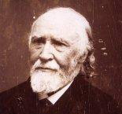

ANNA AR GARDIEN
Textes recueillis par:
Texts collected by:
1° François-Marie Luzel (Gwerzioù Breiz Izel, pp. 448 - 458, 1874)
2° Théodore Hersart de La Villemarqué (Carnet de Keransquer N°1, pp. 1 - 4)
Mélodie
Inconnue. Remplacée ici par "Les jeunes gens à mardi-gras"
Mélodie publiée par l'Abbé François Cadic dans "La Paroisse Bretonne de Paris" en Janvier 1929
(Fond sonore de la page. Arrangement Chr. Souchon, 2013)
|
1° ANNA AR GARDIEN
(Luzel Gwerzioù II, p. 448) I 1. Na, selaouet oll, na, selaouet, Eur werz a zo a-nevez savet ; 2. Eur werz a zo a-nevez savet, D’ar Gardienn koz ha d’e verhed. 3. Ar Gardienn koz a lavare, O troha bara d’e vugale : 4. « Ma merhed, diouzin mar sentet, D’al leur-nevez nan efet-c’hwi ket. » 5. Rag eno ‘vo ‘n aotro Mezobran , Ha Mezomeur, ha Mezomorvan ; 6. Hag ivez an aotro Runango, Gwasa merhetaer ‘zo er vro. 7. « ‘Vid bet droug gand an neb a garo, ‘Vid d’al leur-nevez me ‘yelo, 8. Ha mar bez sorserien, me dañso, Ha mar ne vo ket, me a gano ! II 9. An aotro Mezomeur ‘houlenne Euz e baj bihan hag en deiz-se : 10. « Ma fajig bihan, din-me laret, Piou ar merhed koant ‘zo arruet ? » 11. « Merhed Ar Gardienn eo ar re-ze, ‘Zo bet en deiz-mañ euz taol Doue. » 12. « ‘Vid ma vijent bet euz taol Doue, Ne dlefont ket dond d’al leur-nevez ; 13. ‘Dlefont boud ‘h ober tro ‘r chapelo, Hag o lavared o fedenno. 14. Ma fajig bihan, din laret Pe ano larer euz ar merehd ? » 15. « Nag ar verh hena a zo Anna, Hag ar yaouanka, Marianna. » 16. « Deus-te ganin-me, ha deus raktal, Ma’z in d’o goulenn evid dañsal. » 17. « Na, ma mestrig paour, mar am haret, Ma hoar-vagerez a respetfet ; 18. Respetet ma hoar-vagerez din, Me ‘chomo eur bloaz d’ho servijiñ. » 19. « Na, diskouez da hoar-vagerez din, Ha mar n’eo ket koant, he respetin. » 20. « Ma hoar-vagerez, Anna ‘r Gardien, Braoa feumelenn ‘varch en dachenn ! 21. « Demad deoh, Marianna ‘r Gardien, Pegement e koust deoh ar walenn ; 22. Pegement e koust deoh ar walenn, Dimeuz hoh habit kamolot -gwenn ? » 23. « Aotro Mezomeur, ma iskuzet, N’ouzon ket pegement eo koustet ; 24. N’ouzon ket pegement eo koustet, Gand ma hoar Annaig e klevfet. » 25. « Laret din, Annaig ‘r Gardienn, Pegement e’ koustet ar walenn ; 26. Pegement e’ koustet ‘r walenn deoh Dimeuz hoh habit kamolot glaz ? » 27. Na, hoh afer, aotro, nan eo ket, Kloz ez oa ho yalh pa oa paeet ; 28. Kloz ez oa ho yalh pa oa paeet, Hag hini ma zad ‘oa digoret : 29. Hag hini ma zad ‘oa digoret, Marteze ‘soñj deoh ‘m-eus he laeret ? » 30. « Kent ma’z i er-mêz euz al leur-mañ, Me am-bo paeet dit ar gomz-se ! » 41. Marianna ‘r Gardien a lare D’an aotro Mezomeur eno neuze : 42. « Aotro Mezomeur, mar am hredet, Euz ma hoar Anna ‘n em fachet ket, 43. Rag ‘tre he broz hag he semizetenn , Honnez ‘zoug eur vaz a daou-benn ; 44. Honnez ‘zoug eur vaz a daou-benn, Kapabl, aotro, da dorri ho penn. » 45. Med eur hwitell-arhant ‘oa gantañ, Teir c’hwitelladenn ‘n-eus greet ennañ ; 46. Teir c’hwitelladenn ennañ ‘n-eus greet, Seiteg denjentil ‘zo arruet. 47. Kriz a galon an neb a ouelje E-barz al leur-nevez ma vije, 48. ‘Weled al leur-nevez o ruzia Gand gwad an dudjentil o skuilla ; 49. Gand gwad an dudjentil o skuilla, Anna ‘r Gardienn euz o laha ; 50. Hi a lahe seiz gand eun taol-baz Ha divenn he c’hoar ‘dan he hazel c’hoaz ! Doare all : * 31. Anna ‘r Gardienn, ‘vel ma klevas, Da gavoud he breur-mager a redas ; 32. « Laret-c’hwi din-me, ma breur-mager, C’hwi ma zikourfe m’am-be afer ? » 33. « Mar deo euz ma mestr ho-pe afer, N’ho sikourin ket, ma hoar-vager, 34. Ma vije unan all a vije, Ma hoar-vager, me ho sikourje. » 35. Anna ‘r Gardienn, ‘vel ma klevas, En eur penn-baz kerkent a grogas ; 36. En eur penn-baz kerkent a grogas, Breh he breur-mager he-deus torret. 37. Hag hi laha an aotro ar hont, Hag ivez an aotro ar Beskont ; 38. Hag hi laha an aotro Mezobro, Ivez an aotro Mezomeur. 39. Hag hi laha an aotro Pennanger, Kerklouz evel e balefrenier ; 40. Hag hi laha an aotro Mezobran, Kerkoulz an aotro Mezmorvan. * III 51. Anna Ar Gardienn a lare En toull dor he zad pa arrue : 52. « Ma zadig paour, digoret ho tor D’ho merh, a zo gleb ‘vel ar mor. » 53. « Petar a-nevez az-teus-te greet, Na, ma’z out er stumm-ze stouillet ? » 54. « Neventiz a-walh am-eus-me greet, Triweh denjentil am-eus lahet ; 54. Lahet ‘m-eus an aotro Mezobran, Ha Mezomeur, ha Mezomorvan ; 55. Lahet ‘m-eus an aotro Runango, Gwasa merhetaer a oa er vro. » 56. « Mar ‘teus lahet an oll dud-se, Te ‘varvo ivez, a-benn tri de’. » 57. « O ! ne varvin ket, na ‘benn tri miz, Rag me a yelo beteg Pariz. » IV 58. Anna Ar Gardienn a lare ‘Barz en kêr Gwengamp pa arrue : 59. « Peleh ‘mañ ar prizon er gêr-mañ Ma yelo Anna ‘R Gardienn ennañ ? » 60. « Er prizon, Annaig, n’efet ket, Warhoaz da deg eur, c’hwi ‘vo krouget ! » 61. « O ! me ‘h a da balez ar roue, Da houlenn asurañs ma buhez. » V 62. Anna Ar Gardienn a lare, En palez ar roue p’arrue : 63. « Demad deoh, roue ha rouanez, Me ‘zo deut yaouankig d’ho palez . » 64. « Na, peseurt torfed hoh-eus-c’hwi greet, ‘Vid beza deut ken abred d’on gweled ? » 65. « Na torfed a-walh am-eus-me greet, Triweh denjentil am-eus lahet ; 66. Triweh denjentil am-eus lahet, O klask divenn oute ma gwerhted. » 67. « Anna ‘R Gardienn, din-me laret, Na, gand peseurt armo c’hoariet ? » 68. « Ganet e oa peb a gleze noaz, Ganen-me ne oa ‘med eru penn-baz ; 69. Ganen-me n’oa ‘med eur gelvezenn Houarnet er hreiz hag en daou benn ; 70. Houarnet er hreiz hag en daou benn, Kapabl, Sir, da dorri deoh ho penn. » 71. « ‘Vidon-me n’varnin ket ar merhed, Barnet ‘nezi, itron, mar karet. » 72. « Evid mar he barnan, hag a rin, Ne vo ket d’ar maro he lakin ; 73. Me ‘skrivo dezi war baper-glaz ‘N em divenn hardiz gand he baz ; 74. Me ‘skrivo dezi war baper-gwenn ‘N em divenn hardiz en pep tachenn ; 75. Me ‘skrivo dezi war baper-ru’ Evid bale hardiz en pep tu. » VI 76. Anna Ar Gardienn a lare Er gêr a Wengamp, pa zistroe : 77. « Ma malloz ganeoh, muntrerien hwenn, C’hwi ho-poa ma barnet d’ar gordenn ! » (Bet kanet gand Ann Noan, a barrouz Duod) |
2° GARDIEN KOZH A LAVARE
(Dornskrid 1 a Geransker) p. 1 3. Gardien kozh a lavare 'Troc'hañ e vara d'e vugale: ... ... a. - Ma zad, ma mamm, mar am c'harit, Da fest al Lost-an-Aod me loskit voned. 4. - Da fest al Lost-an-Aod n'ho loskin ket, Rag eno zo tudjentiled 5. Zo ganto ez-oc'h c'hoantaet. 7. - Da fest Lost-an-Aod me a yelo. Mar son ar sonerien, me zañso. 8. Gant tudjentiled deus a bep bro. - 9. 'N Aotroù Lezombre a c'houlenne Gant Mari Ar Gardien an deiz-se: b. - Naik ar Gardien din lavarit: An dro-dañs ganin-me a refet? c. - An dro-dañs ganeoc'h me a rayo Gant mad hag honestiz e pep bro. - d. 'N Aotroù Lezombre a c'houlenne Gant Mari Ar Gardien pa zañse: p. 2 22. - Pegement goust d'eoc'h ar walenn Deus ho tavañcher satin gwenn? 27. - Aotroù Lezombre, hoc'h afer n'eo ket: Serret oa ho yalc'h pa oa paeet! - e. Aotroù Mabbran a c'houlenne Gant Mari Ar Gardien pa zañse: f. - Pegement goust d'eoc'h ar walenn Deus ho korfenn a zeizenn melen? g. - Aotroù Mabtran, hoc'h afer n'eo ket: Ne oac'h ket war plas pa oa paeet! h. - Mari Ar Gardien, din lavarit, Em ger-mañ henozh a lojefec'h? i. Em ger-mañ henozh a lojefec'h? Ha gant ma pajik bihan a gouskefec'h? j. - Er ger-mañ henozh ne lojin ket Na gant ho pajik bihan ne kouskin ket, Na gant ac'hanoc'h, Aotroù, kennebeud. - p. 3 43. Hi da voned d'he c'hotilhon Ha lame he c'hontalason. 36. Tri denjentil nobl he-deus lazhet Ha brec'h he breur-lazher he-deus troc'het. k. Naik ar Gardien a ouele Ne gave den he gomforte. l. Med Mari Ar Gardien hen a re: - Tavit, Naik, na ouelit ket m. Vit ho kouefoù da boud torret, Rag hoc'h enor 'peus ket kollet! 57. Tavit, Ana, na ouelit ket Rag da Roazhon red eo din moned. 63. - Eurvad deoc'h, Duk ha Dukesez: Setu me deuet en ho palez. 64. - Plac'hig yaouank, petra 'peus graet, Pa 'maoc'h deuet ken yaouank d'am gweled? 65. - Tri denjentil nobl am-eus lazhet Ha brec'h ma breur-mager'm eus troc'het. p. 4 n. - Mari Ar Gardien din lavarit, C'hwi a stourmo deus ma soudarded? o. -Lakait o din e-barzh ar porzh: Ma ve c'hant anezhe me ne ran forzh. - p. An hanter anezhe He-deus lazhet Hag 'n hanter all he-deus bloñset. q. - Mari Ar Gardien, din lavarit: Da blac'h gambr ganin chomfet? r. - Da blac'h gambr ganeoc'h ne chomfen ket. Ma c'hoar Ana, ne laran ket. s. Da blac'h gambr ganeoc'h ne choman ket Rag da di ma zat red eo din moned. 74. - Me ya da reiñ deoc'h-c'hwi ur lizher Vit baleiñ hardiz 'bep tachenn. - KLT gant Christian Souchon |

|
2° LE VIEUX LE GARDIEN DISAIT
(Manuscrit de Keransquer N°1) p. 1 3. Le vieux Le Gardien disait En coupant du pain à ses enfants: ... ... a. - Mon père, ma mère, faites-moi plaisir, Laissez-moi aller à la fête de Lost-an-Aot. 4. - A Lost-an-Aod vous n'irez pas Car il y a là des gentilshommes qui vous convoitent. 7. - A la fête de Lost-an-Aod moi j'irai Si les sonneurs jouent, je danserai 8. Avec les nobles d'où qu'ils viennent. - 9. Le Seigneur Lesombray demandait A Marie Le Gardien, ce jour-là: b. - Anne Le Gardien, dites-moi Ferez-vous un tour de danse avec moi? c. - Un tour de danse je ferai avec vous, En tout bien, tout honneur. d. Le seigneur Lesombray demandait A Marie Le Gardien, tout en dansant: p. 2 22. - Combien coûte l'aune De votre tablier de satin blanc? 27. - Seigneur, cela ne vous regarde pas! Votre bourse était fermée quand on l'a payé! - e. Le seigneur Mabtran demandait A Anne Le Gardien, tout en dansant: f. - Combien vous coûte l'aune De votre corsage de soie jaune? g. - Sire Mabtran, mêlez-vous de vos affaires! Vous n'étiez pas là quand il fut payé. h. - Marie Le Gardien, dites-moi, Que diriez-vous de loger chez moi, ce soir, i. De loger chez moi ce soir Et de coucher avec mon domestique? j. - Ne comptez pas sur moi Pour coucher ce soir avec votre domestique Ni avec vous, non plus, Monseigneur! - p. 3 43. Ce disant, elle tâte son cotillon Et en tire un couteau. 36. Et elle a tué trois gentilshommes Et tailladé le bras de son frère de lait. k. Anne Le Gardien pleurait Et personne ne la consolait. l. Si ce n'est Marie elle-même: - Calmez-vous, Anne, ne pleurez pas. m. Même si votre coiffe est abîmée, Votre honneur est intact. 57. Du calme, Anne,cessez ces pleurs! Je vais aller à Rennes, il le faut. - 63. - Mes compliments, Duc et Duchesse Je viens vous voir en votre palais. 64. - Jeune fille, qu'avez-vous fait Qui rend votre démarche si urgente? 65. - J'ai tué trois gentilshommes Et tailladé le bras de mon frère de lait. p. 4 n. - Bigre, Marie, dites-moi Le referiez-vous contre mes soldats? o. - Réunissez-les dans la cour! S'ils sont cent, j'en fais mon affaire! - p. Et elle en tua la moitié Et blessa l'autre moitié. q. - Marie Le Gardien, que diriez-vous De devenir ma femme de chambre? r. - Votre femme de chambre? Moi non! Mais ma sœur Anne, peut-être. s. Moi, je ne le peux pas Car je dois rentrer chez mon père. 74.-Je vais vous donner un sauf-conduit Pour aller sans souci partout. - |
NOTES
|
Notes concernant le chant N°1
:
[1] Luzel fait suivre le titre des mots "Kentel gentañ" (première version), bien qu'il n'en donne pas de seconde. Par contre il indique une variante de 5 quatrains qui fait suite à la strophe 30. "Anne Le Gardien" et les 6 ballades qui suivent (pp. 448 à 494) constituent un ensemble de variations sur un même thème: la punition par un(e) jeune et riche roturier(e) de l'offense faite par un noble libertin, souvent sans le sou, à une jeune fille lors d'un bal. L'archétype semble en être la gwerz du Marquis de Guérand du Barzhaz Breizh, un fait divers datant de 1630 environ et qui se solda par la mort du jeune homme. [2] On peut résumer comme suit cette longue gwerz: Le vieux et riche Le Gardien défend à ses deux filles, Anne et Marianne, d'aller à l'aire neuve, car quatre seigneurs désargentés et coureurs de dots y seront. Les demoiselles passent outre à son interdiction. A leur arrivée, elles sont immédiatement remarquées par le seigneur de Mezomeur qui s'enquiert de leur identité auprès de son page, le frère de lait d'Anne, l'ainée. Ce dernier fait les présentations. Tout en dansant, Mezomeur demande à Marianne, puis à Anne le prix de leurs beaux atours. La première esquive la question. La seconde le remet vertement à sa place. Malgré la mise en garde de Marianne, Mezomeur, avec un sifflet d'argent, appelle à la rescousse dix-sept autres gentilshommes. Anne sort de dessous son vêtement un "bâton à deux bouts" dont elle use avec une telle maîtrise que tout d'abord elle tue net sept des assaillants avant de faire subir le même sort aux autres, tout en entourant de son bras le cou de sa sœur. Dans une variante, elle sollicite préalablement l'aide du page qui la lui refuse, ce qui lui vaut d'être la première victime et d'avoir le bras cassé. Anne rend compte de ses exploits à son père qui lui prédit que la justice l'aura condamnée à mort sous trois jours. Anne décide d'aller à Paris plaider sa cause auprès du roi. Après avoir échappé de justesse à la pendaison à Guingamp, elle se présente devant les époux royaux et leur expose comment avec son "penn-bas" de coudrier, elle a mis hors de nuire dix-huit nobles qui menaçaient sa virginité avec leurs épées. Le roi charge la reine de décider du sort d'une femme. Celle-ci, conformément à l'usage des gwerzioù lui fait délivrer un port d'arme, une licence d'utilisation et un sauf-conduit sur des papiers bleu, blanc et rouge. En repassant par Guingamp, elle maudit cette ville qui l'avait trop hâtivement condamnée. [3] A propos des noms des seigneurs coureurs de filles, Luzel indique dans une note que "le manoir de Mezobran est en la commune du Minihy-Tréguier, celui de Mezomeur en Penvénan, et celui de Runangoff en Pédernec". Cependant, dans la variante (strophes 31 à 40), ce sont des noms légèrement différents qui apparaissent: Mésonévé, Mésobran, Mézomorvan, "Penanger hag e palefrenier" (Penanguer et son palefrenier) et Mézobré. Ce dernier nom est suivi d'un équivalent entouré de crochets sans autres commentaires: "Les Aubrays". Ce personnage fait habituellement figure de héros positif. C'est lui qui apparaît dans le Barzhaz sous le nom de Lez-Breizh . [4] Certains veulent voir dans ces histoires qui mettent aux prises, non point Guignol et le Gendarme, mais l'enfant de paysan enrichi et le seigneur aussi lubrique que désargenté, l'annonce de la révolution de 1789 avec deux siècles d'avance. On peut penser au contraire que les relations sociales ainsi dépeintes étaient propres à la Bretagne, laquelle restera durablement en partie hostile aux idées nouvelles. Notes concernant le chant N°2 : [5] Ce chant est le premier noté dans le carnet N°1 conservé à Keransquer. La Villemarqué ne l'a pas retenu pour figurer au Panthéon des ballades populaires bretonnes qu'il allait ériger, le "Barzhaz Breizh". Sans doute a-t-il trouvé que le sujet manquait de décorum, par le rôle qu'il assigne à une "faible" femme et par la piètre image qu'il donne de la noblesse bretonne (que Luzel se complaira, au contraire, à chansonner par gwerzioù interposées!). [6] Cette version est beaucoup plus courte mais, bien que lacunaire, tout aussi compréhensible que la précédente: Passant outre à l'interdiction de leur père, Marie et Annaïk Le Gardien se rendent à la fête de Lost-an-Aod (Queue-du-rivage), lieu-dit de la commune de Plouguerneau (Nord de Brest). Le danger pressenti par leur père est au rendez-vous: le seigneur Lesombrai (sans doute pour "Les Aubrays", cf. note 3) invite à danser Marie, tandis que le seigneur Mabbran (ou Mabtran) invite sa sœur Annaïk, lesquelles acceptent si c'est en tout bien, tout honneur. Mais les deux filous en profitent pour sonder la situation financière de leurs cavalières en s'enquérant du prix de leurs beaux atours. On les remet vertement à leur place. Alors Lesombrai, furieux, s'adresse à Marie comme à une prostituée, l'invitant à coucher avec son page. Celle-ci sort un couteau qu'elle cachait sous son cotillon, tue trois gentilshommes et entaille le bras du page dont on apprend qu'il n'est autre que son frère de lait (les mots "breur lazher", "frère meurtrier", strophe 36, sont corrigés en "breur mager", "frère de lait", strophe 65). Annaïk est en larmes tandis que sa courageuse sœur la console: "sa coiffe est abîmée, mais son honneur est sauf". Plutôt que d'être exposée localement à des représailles judiciaires, elle prendra les devants et ira exposer son cas au Duc et à la Duchesse à Rennes. Le Duc, sceptique, lui demande de réitérer son exploit contre ses soldats. Elle en tue la moitié et blesse l'autre moitié! Puis, après avoir refusé, au bénéfice de sa sœur, la protection dont elle aurait pu jouir en tant que femme de chambre de la duchesse, elle retourne auprès de son père, munie d'un sauf-conduit. [7] L'importance du sauf-conduit délivré par la plus-haute autorité possible (ici le Duc, là le Roi) s'explique par le fait que la justice locale était administrée par les seigneurs du cru et qu'en l'absence de représentants nombreux du souverain, il leur était facile de la détourner à leur avantage. La "ronde du papier timbré" se moque ainsi de l'armée royale: "Skañvañ arme 'n-deus Roue Frañs 'Bouezo ket kant lur 'n hon valañs!" "L'armée du roi de France ne pèsera pas lourd, pas même cent livres, sur notre balance." |
Notes about the song N°1
:
[1] Luzel appended to the title of this song the words "Kental gentañ" (first version), though you would look in vain for a second version. Maybe he meant a five quatrain variant inserted after stanza 30. "Anne Le Gardien" and the 6 ensuing ballads (pp. 448 to 494) go to make up a body of variations to the same theme: the punishment by a young and rich commonner (of either sex) of the insult inflicted to a girl during a dance by a penniless, womanizing nobleman. The common origin of theses songs seems to be the Gwerz of Marquis de Guérand included in the Barzhaz Breizh, based on a real event which resulted in a young man's death (ca 1630). [2] This lengthy ballad sums up as follows: The old and wealthy Le Gardien tries to forbid his two daughters, Anne and Marianne, to go to a new threshing floor dance, since he heard that four penniless noblemen and fortune hunters will be there. Both young ladies disregard this prohibition. When they appear at the feast they are immediately noticed by the Lord Mezomeur who asks his pageboy, the elder sister Anne's foster brother, who the newcomers are. The latter introduces him to the ladies. During the dance, Mezomeur asks Marianne, then Anne, what their beautiful dresses did cost. Marianne avoids to answer. But her elder sister puts the insolent questioner in his place. In spite of Marianne's warning, Mezomeur blows a silver whistle and seventeen other noblemen haste to his aid. Now, Anne produces a cudgel that was hidden away under her garment and wields it so deftly that she batters to death seven of her assailants to begin with. Holding her arms around her sister's neck to better protect her, she also managed to knock out the rest. In a variant, she first requires the help of the page who denies it, thus earning the honour of being her first victim and having his arm broken. Anne reports to her father who expects her to be arrested and sentenced to death before three days. Therefore she decides to go to Paris and plead her case before the King himself. In Guingamp, on her way to Paris, she narrowly escaped being hanged. She appeared at the King and Queen's court end explained how she killed, with the sole help of her hazel wood cudgel, eighteen noblemen who had tried with their swords to attempt upon her virginity. The king entrusted her wife with the job of passing a sentence over a woman. The queen, as always happens in gwerzioù, delivered her on blue, white and red paper a weapon licence, a permission to use it and a safe-conduct. Anne cursed the city of Guingamp, when passing near on her way back, because it had condemned her so rashly. [3] Concerning the noble womanizers' names, Luzel states in a footnote that "manor Mezobran belongs to parish Minihy-Tréguier, manor Mezomeur to Penvénan and manor Runangoff to Pédernec". However, in the variant (stanzas 31 with 40), slightly different names are mentioned: Mésonévé, Mésobran, Mézomorvan, "Penanger hag e palefrenier" (Penanguer and his ostler) and Mézobré. This last name is followed by an equivalent in square brackets, without any comment: "Les Aubrays", who usually belong to the "goodies". Les Aubrays appears in the Barzhaz as Lez-Breizh . [4] Many a scholar claims to perceive in those stories where the protagonists are, not Punch and Judy, but the son of the rich farmer and a nobleman as lustful as penniless, a harbinger of the 1789 revolution, two centuries ahead of it. But we also may assume that the relationship thus mirrored was peculiar to Brittany which will for a long time remain tightly closed to the new ideas in fashion. Notes about song N°2 : [5] This song is the first piece noted in the copybook N°1 kept at Keransquer manor. La Villemarqué did not allow it to enter the Pantheon of Breton ballads he was about to erect, the "Barzhaz Breizh". Maybe he deemed the plot indecorous on account of the part played by a woman (usually considered a weak being) and of the sorry picture of the Breton gentry it conveys. On the contrary, Luzel, who was a commoner, piles up in his collections satires against this caste. [6] This version is shorter than the previous, but, though incomplete, by no means less clear: Ignoring their father's admonishment, Marie and Annaïk Le Gardien go to the feast at Lost-an-Aod (Point of the Shore), a place name in the parish Plouguerneau (north of Brest). The danger sensed by their father materializes: the Lord Lesombrai (very likely a variant of "Les Aubrays", see note 3 above) asks to dance Marie and the Lord Mabbran (or Mabtran) asks her sister Annaïk. Both sisters accept as the properties require. But the two rogues take advantage of it to sound out the financial background of their partners, by inquiring about the price of their precious garb. They are answered as they deserve, in no uncertain terms. Now Lesombrai, mad with rage, prompts Marie to go and sleep with his pageboy, as if she were a harlot. Marie seizes the knife she hid in her petticoat, stabs three gentlemen and gashes the arm of the pageboy who happens to be her own foster-brother (the words "breur lazher" = brother murderer, in stanza 36, are amended to "breur mager" = foster brother, in stanza 65). Annaïk weeps while her gallant sister comforts her: "her headdress may be damaged. What matter if her honour is safe!". Rather than passively wait till the local justice would investigate it, she decided to plead her own case before the Duke and the Duchess in Rennes. The Duke, disbelieving her, asked her to reiterate her exploit against his soldiers. In no time she killed half of them and injured the rest! Then, refusing, for the benefit of her sister, the protection the Duchess would have extended to her by appointing her as her chambermaid, she returned to her father's house with a safe-conduct in her pocket. [7] The importance of the safe-conduct delivered by the highest possible authority (here the Duke, there the King) is due to the fact that justice was dispensed locally by the nobility who would easily divert it to their advantage. All the more so, as the representatives of the royal power were not many in Brittany. The "round dance of the stamped paper" makes fun of the royal army in these terms: "Skañvañ arme 'n-deus Roue Frañs 'Bouezo ket kant lur 'n hon valañs!" "Heavy? The King's troopers are not: Not a hundred pounds the whole lot!" |

François-Marie Luzel (1826-1895)
Markiz Gwerand (Le Marquis de Guérand)
Retour à la liste de chants de Luzel